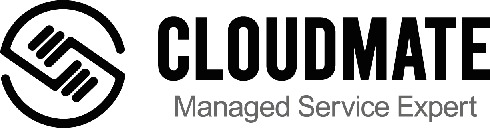

소식
클라우드메이트가 실버 후원사로 참여합니다!
2021-08-10 01:49 +0700
- 한영빈

클라우드메이트를 이번 행사의 실버 후원사로 소개해 드리게 되어 매우 기쁩니다.
클라우드메이트는 대한민국 서울에 위치한 인증된 CSP(클라우드 서비스 제공사) 회사입니다. 클라우드 컴퓨팅 환경에서의 전문적인 관리형 서비스를 제공합니다. 클라우드메이트에는 MNC경험에 바탕으로 한 클라우드 분야에서 검증된 최고의 엔지니어와 개발자를 보유하고 있습니다. 전문적인 관리형 서비스를 통해, 고객에게 체계적인 관리와 클라우드 인프라를 제공합니다. 또한 처음 클라우드를 도입하고자 하는 곳에 컨설팅도 제공하고 있습니다. 마지막으로, Microsoft Azure MVP를 통해, 수년 동안 다양한 공급업체와 많은 커뮤니티에 교육 프로그램 및 활동에 기여해 오고 있습니다.
실버 후원사인 클라우드메이트 에 대해 더 알아보고 싶으신가요? 여기에서 자세히 알아보세요. 후원사로 참여하고 싶으신가요? 여기에서 자세히 알아보세요!
2021년 9월 25일부터 26일 까지 이틀간 예정된 우부콘 아시아 2021 사전 등록도 잊지 마세요! 우부콘 아시아 2021 사전등록: https://eventyay.com/e/75ac7f83